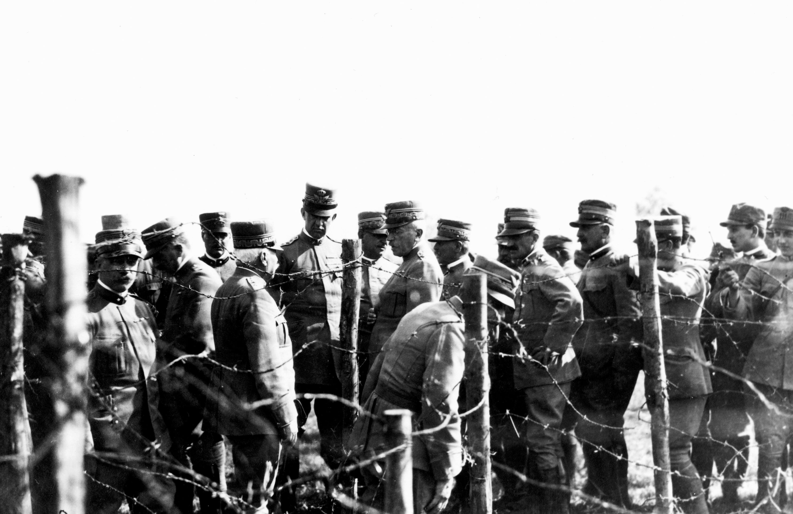
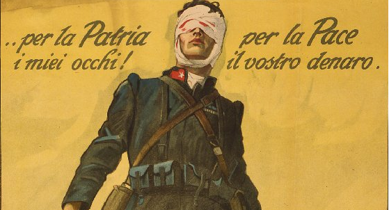
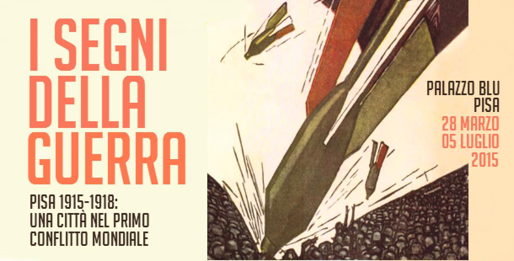
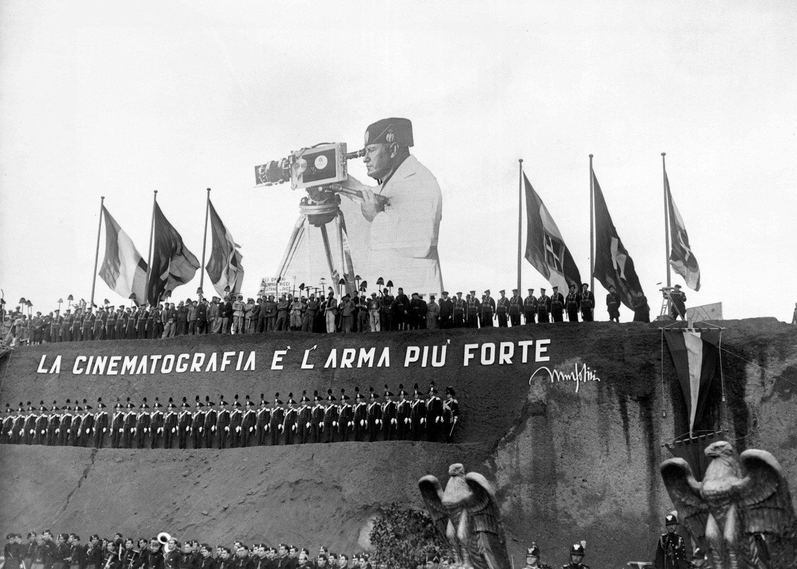

Per ottenere l’obiettivo del successo finale i governi sottoposero le rispettive popolazioni a uno sforzo di mobilitazione totale: tutte le forze del Paese dovevano puntare alla vittoria. Venne imposta una stretta censura su tutte le voci che rivelavano le difficili situazioni dei fronti o le reali condizioni di vita dei soldati, come pure quelle che chiedevano la fine del confitto,

I disfattisti erano posti, dai sostenitori del confitto, sullo stesso piano dei sabotatori, nemici che minavano la stabilità della nazione agendo subdolamente all’interno dello Stato. Per mobilitare la popolazione i governi ricorsero massicciamente alla propaganda, rivolta alle truppe per sostenerne il morale, ma anche ai civili.

Vennero stampati in enormi quantità di manifesti e cartoline che esaltavano le doti e le vittorie del proprio esercito oppure pro
tutte accomunate sotto la definizione di “disfattismo”. Sono state organizzate manifestazioni in sostegno dei combattenti, istituiti comitati per la resistenza contro il nemico interno.
spettavano disastri e violenze di ogni genere in caso di vittoria nemica.

Anche il cinema che da poco aveva fatto la sua comparsa venne posto al servizio della causa nazionale. I bambini divennero oggetto di peculiare di indottrinamento,
a partire dalla scuola per arrivare ai libri e ai giocattoli, tutti di carattere bellico.